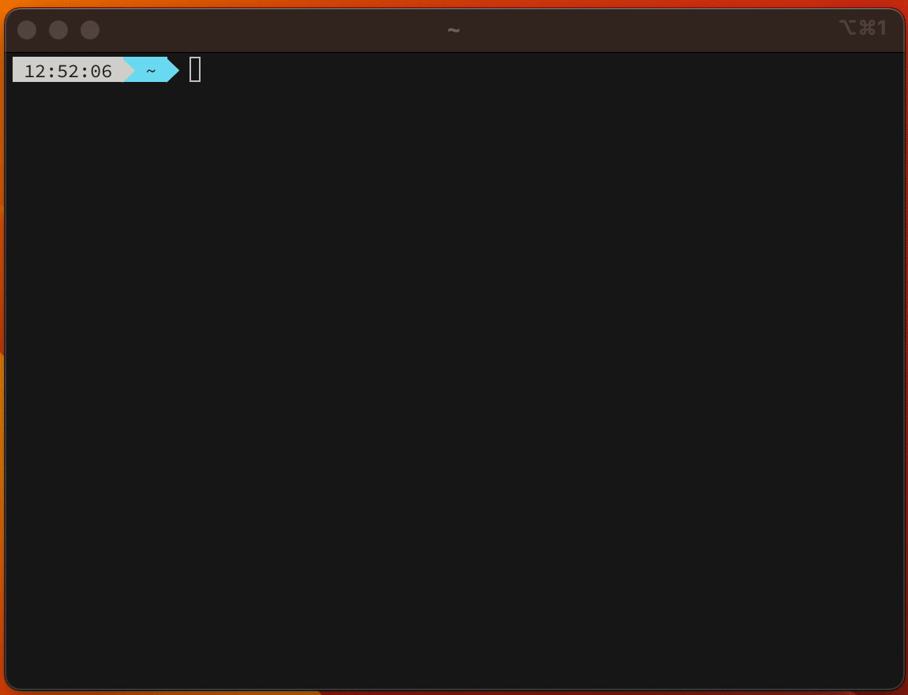

Pressing ctrl-x ctrl-e in the command line, works for bash and zsh (and maybe also other command line interpreters), opens up the text editor set in the environment variable $EDITOR for you to edit the command there. After saving you go back to the shell prompt with what was edited inside the editor.
